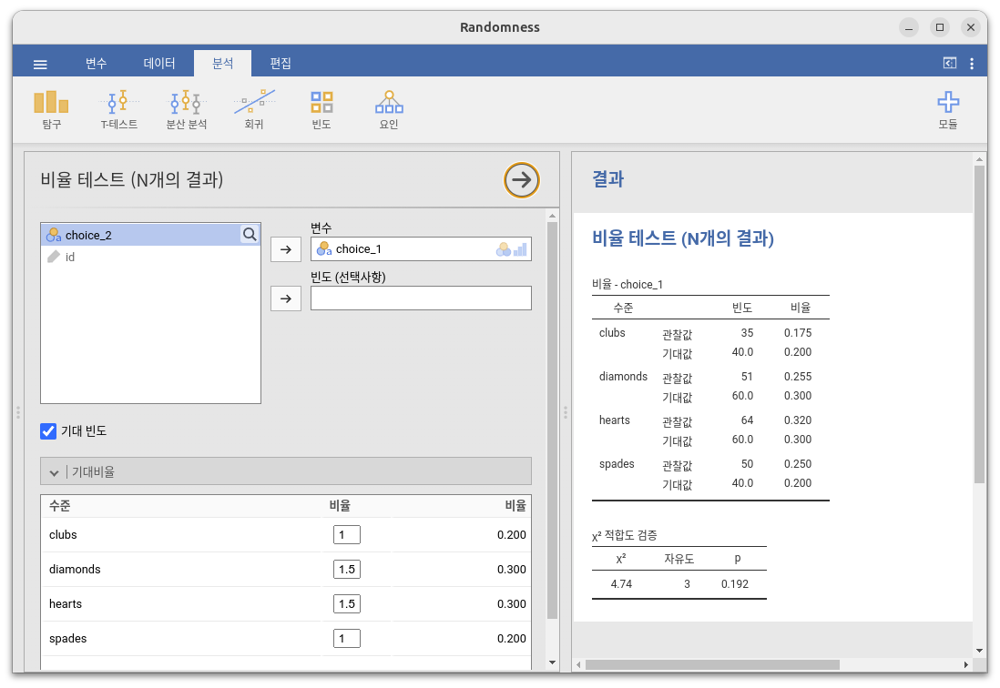
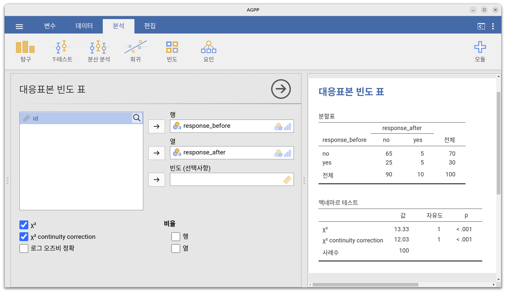

| 클럽 | 다이아몬드 | 하트 | 스페이드 |
|---|---|---|---|
| 35 | 51 | 64 | 50 |
10 범주형 데이터 분석
이제까지 가설 검정의 기본 이론을 다루었으니, 심리학에서 흔히 사용되는 특정한 검정 방법들을 살펴볼 차례입니다. 어디서부터 시작하는 것이 좋을까요? 교재마다 출발점이 다르지만, 저는 \(\chi^2\) 검정(이 장에서 다룰 것이며 “카이제곱(chi-square)”1이라고 발음합니다)과 \(t\)-검정(Chapter 11 장에서 다룸)부터 시작하려 합니다. 이 두 가지 도구는 과학 연구에서 매우 자주 사용되며, 이후 장에서 다룰 “회귀 분석”이나 “분산 분석”만큼 강력하지는 않지만 이해하기 훨씬 쉽습니다.
“범주형 데이터(categorical data)”라는 용어는 “명목척도 데이터(nominal scale data)”의 또 다른 이름일 뿐입니다. 이미 다룬 개념이지만, 데이터 분석의 맥락에서는 “명목척도 데이터”보다는 “범주형 데이터”라는 용어가 더 자주 사용됩니다. 왜 그런지는 저도 잘 모르겠습니다. 어쨌든, 범주형 데이터 분석(categorical data analysis) 은 명목척도 데이터를 분석할 때 사용할 수 있는 여러 도구를 의미합니다. 하지만 범주형 데이터를 분석하는 방법은 매우 다양하며, 이 장에서는 그중에서도 대표적인 몇 가지만 다룰 것입니다.
10.1 \(\chi^2\) (카이제곱) 적합도 검정
\(\chi^2\) 적합도(goodness-of-fit) 검정은 가장 오래된 가설 검정 중 하나입니다. 이 검정은 1900년경 칼 피어슨(Karl Pearson)에 의해 개발되었으며 (Pearson, 1900), 이후 로널드 피셔(Sir Ronald Fisher)에 의해 몇 가지 수정이 이루어졌습니다(Fisher, 1922). 이 검정은 명목 변수의 관측된 빈도 분포가 기대되는 빈도 분포와 일치하는지를 평가하는 데 사용됩니다. 예를 들어, 어떤 집단의 환자들이 실험적 치료를 받고 있으며, 이들의 건강 상태가 호전되었는지, 그대로인지, 악화되었는지를 평가했다고 가정해 봅시다. 적합도 검정을 사용하면 “호전”, “변화 없음”, “악화”의 각 범주에서 관측된 환자 수가 기존의 표준 치료를 받았을 때 기대되는 수치와 일치하는지를 검정할 수 있습니다. 이제 이 개념을 심리학적인 맥락에서 더 깊이 생각해 봅시다.
10.1.1 카드 데이터
수년에 걸쳐 여러 연구에서 인간이 무작위성을 시뮬레이션하는 데 어려움을 겪는다는 사실이 밝혀졌습니다. 우리가 무작위로 행동하려고 노력하더라도, 인간은 패턴과 구조를 기반으로 사고하기 때문에 “무작위로 행동하라”는 요청을 받으면 실제로는 전혀 무작위적이지 않은 행동을 하게 됩니다. 따라서 인간의 무작위성(혹은 비무작위성)에 대한 연구는 우리가 세상을 어떻게 인식하는지에 대한 깊은 심리학적 질문을 제기합니다.
이제, 이를 염두에 두고 아주 간단한 연구를 살펴보겠습니다. 가령, 사람들이 섞인 카드 데크를 상상한 후, 그중에서 “무작위로” 한 장을 선택하도록 요청했다고 가정해 봅시다. 첫 번째 카드를 선택한 후, 두 번째 카드도 같은 방식으로 선택하도록 합니다. 우리는 이 두 선택에서 사람들이 선택한 카드의 무늬(하트, 클럽, 스페이드, 다이아몬드)를 분석하려고 합니다. 예를 들어, \(N = 200\)명의 사람들에게 이 실험을 수행한 후, 그들이 실제로 무작위로 카드를 선택했는지를 데이터를 통해 알아보고자 합니다.
이 데이터는 randomness.csv 파일에 저장되어 있으며, jamovi에서 파일을 열어 스프레드시트 형태로 보면 세 개의 변수가 포함되어 있습니다. 각 참가자에게 고유한 식별자를 할당하는 id 변수, 그리고 참가자들이 선택한 카드 무늬를 나타내는 choice_1과 choice_2 변수가 있습니다.
우선, 사람들이 첫 번째로 선택한 카드에 집중해 보겠습니다. ‘기술통계’-‘기술통계’ 메뉴에서 ‘빈도분포표’ 옵션을 사용하면 각 무늬가 선택된 횟수를 계산할 수 있습니다. 그 결과는 Table 10.1 과 같습니다.
이 작은 빈도표는 꽤 유용합니다. 표를 보면 사람들이 클럽보다 하트를 더 자주 선택하는 경향이 있는 것처럼 보이지만, 단순히 표만 보고서는 이것이 실제로 유의한 차이인지, 아니면 단순한 우연인지 확신하기 어렵습니다. 따라서 이를 확인하기 위해 통계적 분석을 수행해야 하며, 다음 절에서 분석 방법을 설명하겠습니다.
좋습니다. 이제부터 이 표를 우리가 분석해야 할 데이터로 다루겠습니다. 다만, 데이터를 수학적으로 표현해야 하는 경우가 생길 것이므로(양해 부탁드립니다!) 이에 대한 표기법을 명확히 해두는 것이 좋겠습니다.
수학적 표기에서는 “관측값(observed)”이라는 단어를 문자 \(O\)로 줄여 나타내며, 첨자를 이용해 특정 위치의 관측값을 나타냅니다. 예를 들어, 표에서 두 번째 관측값은 수식으로 \(O_2\)라고 표기됩니다. Table 10.2 는 영어 설명과 수학적 기호 간의 관계를 설명합니다.
| 레이블 | 인덱스, i | 수학 기호 | 값 |
|---|---|---|---|
| 클럽, \( \clubsuit \) | 1 | \( O_1 \) | 35 |
| 다이아몬드, \( \diamondsuit \) | 2 | \( O_2 \) | 51 |
| 하트, \( \heartsuit \) | 3 | \( O_3 \) | 64 |
| 스페이드, \( \spadesuit \) | 4 | \( O_4 \) | 50 |
이제 개념이 좀 더 명확해졌기를 바랍니다. 또한, 수학자들은 특정한 값보다는 일반적인 개념을 선호하기 때문에, \(i\)번째 범주에 속하는 관측 횟수를 의미하는 \(O_i\)라는 표기법도 사용됩니다(\(i\)는 1, 2, 3, 4 중 하나일 수 있음).
마지막으로, 모든 범주의 관측 빈도를 나타내고 싶을 때, 통계학자들은 이를 하나의 벡터2로 묶어서 표기하는데, 이를 \(O\)라고 부르겠습니다.
\[O = (O_1, O_2, O_3, O_4)\]
이 표기법은 새로운 개념이 아니라 단순한 기호일 뿐입니다. 예를 들어, \(O = (35, 51, 64, 50)\)이라고 하면, 이는 우리가 관측한 빈도표를 수학적 표기법으로 표현한 것일 뿐입니다.
10.1.2 귀무가설과 대립가설
앞 절에서 설명했듯이, 우리의 연구 가설은 “사람들은 무작위로 카드를 선택하지 않는다”는 것입니다. 이제 이 연구 가설을 통계적 가설로 변환한 후, 이에 대한 통계적 검정을 구성해 보겠습니다. 여기서 사용할 검정 방법은 피어슨(Pearson)의 \(\chi^2\) (카이제곱) 적합도 검정이며, 대부분의 경우와 마찬가지로 먼저 귀무가설을 신중하게 설정해야 합니다.
이 경우에는 귀무가설을 설정하는 것은 비교적 쉽습니다. 우선, 귀무가설을 문장으로 표현해 보겠습니다.
\[H_0: \text{ 네 가지 무늬가 동일한 확률로 선택된다}\]
이제 이를 수학적으로 표현해 봅시다. \(P_j\)를 \(j\)번째 무늬가 선택될 실제 확률이라고 하겠습니다. 귀무가설이 참이라면, 네 가지 무늬 각각이 25%의 확률로 선택될 것입니다. 즉, 귀무가설은 다음과 같은 주장입니다.
\[P_1 = .25, \quad P_2 = .25, \quad P_3 = .25, \quad P_4 = .25\]
앞서 관측 빈도를 벡터 \(O\)로 묶어 데이터 전체를 요약했던 것처럼, 귀무가설과 관련된 확률들을 벡터 \(P\)로 묶을 수 있습니다. 벡터 \(P = (P_1, P_2, P_3, P_4)\)를 귀무가설을 나타내는 확률들의 집합이라고 하면, 귀무가설은 다음과 같이 표현됩니다.
\[H_0: P = (.25, .25, .25, .25)\]
이 사례에서 귀무가설은 모든 범주의 확률이 서로 동일한 값을 가지는 벡터 \(P\)로 표현됩니다. 하지만 반드시 이렇게 될 필요는 없습니다. 예를 들어, 실험 과제가 참가자들에게 클럽이 다른 무늬보다 두 배 더 많은 카드 데크에서 카드를 무작위로 선택하도고 요구하는 것이었다면, 귀무가설은 다음과 같이 설정될 수도 있습니다.
\[P = (.4, .2, .2, .2)\]
중요한 것은 확률 값들이 모두 양수이고 합이 1이 되면 귀무가설로서 유효하다는 점입니다. 하지만 적합도 검정은 일반적으로 모든 범주가 동일한 확률을 가질 것이라는 귀무가설을 검정하는 데 자주 사용되므로, 이번 예제에서도 이를 유지하겠습니다.
그렇다면 대립가설(alternative hypothesis), 즉 \(H_1\)은 어떻게 설정해야 할까요? 우리가 관심 있는 것은 단순히 확률들이 동일하지 않다는 것을 보여주는 것입니다(즉, 사람들의 선택이 완전히 무작위적이지 않음을 증명하는 것). 따라서 “인간 친화적인(human-friendly)” 버전의 가설은 다음과 같습니다.
\[H_0: \text{ 네 가지 무늬가 동일한 확률로 선택된다}\] \[H_1: \text{ 적어도 하나의 무늬는 선택 확률이 0.25가 아니다}\]
반면, “수학자 친화적인(mathematician-friendly)” 버전은 다음과 같이 표현됩니다.
\[H_0: P = (.25, .25, .25, .25)\] \[H_1: P \neq (.25, .25, .25, .25)\]
10.1.3 “적합도” 검정 통계량
이제 우리는 관측 빈도 \(O\)와 귀무가설을 검정하는 데 사용될 확률들의 집합 \(P\)를 갖게 되었습니다. 이제 해야 할 일은 귀무가설을 검정하는 것입니다. 항상 그렇듯이, \(H_0\)와 \(H_1\)을 비교하려면 검정 통계량이 필요합니다. 적합도 검정에서 사용하는 기본적인 방법은 데이터가 귀무가설과 얼마나 “가까운지”를 측정하는 검정 통계량을 구성하는 것입니다. 만약 데이터가 귀무가설이 참일 때 기대되는 모습과 다르다면, 귀무가설은 참이 아닐 가능성이 큽니다.
그렇다면, 귀무가설이 참이라면 우리는 무엇을 기대할 수 있을까요? 좀 더 정확히 말하자면, 기대 빈도(expected frequencies)는 무엇일까요? 여기서 \(N = 200\)개의 관측값이 있으며, (귀무가설이 참이라면) 하나의 관측값이 하트를 선택할 확률은 \(P_3 = .25\)입니다. 따라서 하트가 선택될 것으로 기대되는 횟수는 \(200 \times .25 = 50\)입니다. 이를 더 일반적으로 표현하면, 만약 \(E_i\)를 “귀무가설이 참일 경우 \(i\)번째 범주에서 기대되는 응답 수”라고 정의하면:
\[E_i = N \times P_i\]
이 계산은 상당히 간단합니다. 만약 200개의 관측값이 네 개의 범주로 나뉠 수 있고, 네 개의 범주가 동일한 확률을 가진다고 가정하면, 각 범주에서 평균적으로 50번의 관측값이 기대될 것입니다.
그렇다면 이제 이를 검정 통계량으로 어떻게 변환할 수 있을까요? 우리가 해야 할 일은 각 범주에서 기대되는 관측값(\(E_i\))과 실제 관측값(\(O_i\))을 비교하는 것입니다. 이를 기반으로 적절한 검정 통계량을 도출할 수 있어야 합니다. 우선, 귀무가설이 기대한느 값과 실제 관측된 값 사이의 차이를 계산해 보겠습니다. 즉, “관측값 - 기대값” 차이 점수를 계산합니다:
\[O_i - E_i\]
이 계산 결과는 Table 10.3 에 기술되어 있습니다.
| \( \clubsuit \) | \( \diamondsuit \) | \( \heartsuit \) | \( \spadesuit \) | |
|---|---|---|---|---|
| 기대빈도 \( E_i\) | 50 | 50 | 50 | 50 |
| 관측빈도 \( O_i\) | 35 | 51 | 64 | 50 |
| 차이 \( O_i-E_i\) | -15 | 1 | 14 | 0 |
이제 계산 결과를 보면, 사람들이 귀무가설이 기대하는 것보다 하트를 더 많이 선택하고, 클럽을 더 적게 선택했다는 것을 알 수 있습니다. 하지만 조금만 더 생각해 보면, 이러한 차이값 그대로는 우리가 원하는 것을 완전히 설명할 수 없다는 것을 알 수 있습니다. 직관적으로 생각했을 때, 귀무가설이 기대한 값보다 관측값이 너무 적은 경우(클럽의 경우)와 너무 많은 경우(하트의 경우)는 동일하게 “틀렸다”고 볼 수 있습니다. 그런데 현재 방식으로 계산하면 클럽의 경우 음수 값이, 하트의 경우 양수 값이 나오므로 조금 이상해 보입니다. 이를 해결하는 간단한 방법은 모든 값을 제곱하는 것입니다. 즉, 다음을 계산합니다.
\[(E_i - O_i)^2\]
이 결과는 Table 10.4 에 기술되어 있습니다.
| \( \clubsuit \) | \( \diamondsuit \) | \( \heartsuit \) | \( \spadesuit \) |
|---|---|---|---|
| 225 | 1 | 196 | 0 |
이제 한 걸음 더 나아갔습니다. 현재 우리가 얻은 값들은 귀무가설이 부정확한 예측을 했을 때(클럽과 하트) 크게 나타나고, 정확한 예측을 했을 때(다이아몬드와 스페이드) 작게 나타납니다. 다음으로, 몇 가지 기술적인 이유로 인해(곧 설명하겠습니다) 모든 값을 기대 빈도 \(E_i\)로 나누겠습니다. 즉, 다음을 계산합니다.
\[\frac{(E_i - O_i)^2}{E_i}\]
이 예에서는 모든 범주의 \(E_i\) 값이 50이므로, 계산이 그리 흥미롭지는 않지만, 그래도 진행해 보겠습니다(Table 10.5).
| \( \clubsuit \) | \( \diamondsuit \) | \( \heartsuit \) | \( \spadesuit \) |
|---|---|---|---|
| 4.50 | 0.02 | 3.92 | 0.00 |
결과적으로, 우리는 네 개의 “오차(error) 점수”를 얻게 되었습니다. 각 점수는 우리가 귀무가설을 사용하여 관측 빈도를 예측했을 때, 귀무가설이 얼마나 “틀렸는지”를 나타냅니다. 이를 유용한 검정 통계량으로 변환하기 위해, 단순히 이 값들을 모두 더해봅시다. 이렇게 해서 얻어진 값이 바로 적합도(goodness-of-fit) 통계량이며, 보통 \(\chi^2\) (카이제곱) 또는 GOF라고 불립니다. 계산식은 다음과 같습니다.
\[\sum \frac{(observed - expected)^2}{expected}\]
우리의 데이터에 적용하면, 이 값은 8.44가 됩니다.
만약 \(k\)가 총 범주의 개수를 의미한다고 하면(즉, 이번 카드 데이터에서는 \(k = 4\)), \(\chi^2\) 통계량은 다음과 같이 정의됩니다.
\[\chi^2 = \sum_{i=1}^{k} \frac{(O_i-E_i)^2}{E_i}\]
직관적으로 보면, 만약 \(\chi^2\) 값이 작다면 관측값 \(O_i\)가 귀무가설이 예측한 값 \(E_i\)와 매우 가깝다는 의미이므로, 귀무가설을 기각하려면 충분히 큰 \(\chi^2\) 값이 필요합니다.
우리의 카드 데이터에서 계산한 \(\chi^2\) 값은 8.44였습니다. 이제 중요한 질문은, 이 값이 귀무가설을 기각하기에 충분히 큰 값인가 하는 것입니다.
10.1.4 적합도(GOF) 통계량의 표본 분포
\(\chi^2\) 값이 귀무가설을 기각하기에 충분히 큰지 판단하려면, 귀무가설이 참일 때 \(\chi^2\)의 표본 분포가 어떻게 될지를 알아야 합니다. 이 절에서는 바로 그 부분을 설명하려고 합니다. \(\chi^2\) 통계량의 표본 분포가 어떻게 구성되는지 꽤 자세히 보여드린 후, 다음 절에서 이를 활용하여 가설 검정을 구성할 것입니다. 만약 빠르게 결론을 보고 싶고, 표본 분포가 자유도가 \(k - 1\)인 \(\chi^2\) (카이제곱) 분포를 따른다는 것을 그대로 받아들일 수 있다면, 이 절을 건너뛰어도 됩니다. 하지만 적합도 검정이 왜 그렇게 작동하는지 알고 싶다면 계속 읽어 주세요.
우선, 귀무가설이 실제로 참이라고 가정해 봅시다. 그렇다면, 특정 관측값이 \(i\)번째 범주에 속할 확률은 \(P_i\)입니다. 결국, 이것이 바로 우리가 설정한 귀무가설의 정의입니다. 그렇다면 이 말이 실제로 의미하는 바는 무엇일까요?
이것은 마치 “대자연”이 특정 관측값이 범주 \(i\)에 속할지 여부를 결정하는 데 가중치가 있는 동전을 던지는 것과 비슷합니다(즉, 앞면이 나올 확률이 \(P_j\)인 동전). 따라서 우리는 관측 빈도 \(O_i\)를 이렇게 생각할 수 있습니다. 대자연이 \(N\)번 동전을 던져(데이터 세트의 각 관측값마다 한 번씩), 그중 정확히 \(O_i\)번 앞면이 나온 것입니다. 물론, 이 방식은 다소 기묘해 보일 수도 있습니다. 하지만 (제 희망으로는) 여러분이 이 상황을 어디선가 본 적이 있다는 점을 떠올리게 만들 것입니다. 바로 Chapter 7 에 있는 Section 7.4 에서 본 내용과 동일한 구조입니다. 즉, 귀무가설이 참이라면, 우리의 관측 빈도는 이항 분포에서 샘플링된 값이 됩니다.
\[O_i \sim Binomial(P_i,N) \]
이제 Section 8.3.3 에서 논의했던 내용을 떠올려 보세요. 이항 분포는 \(N\)이 크고 \(P_i\)가 0이나 1에 너무 가깝지 않을 때, 정규 분포와 거의 동일한 형태를 보입니다. 즉, \(N P_i\)가 충분히 클 때, 이항 분포는 정규 분포에 가까워집니다. 다시 말해, 기대 빈도 \(E_i\)가 충분히 크다면, \(O_i\)의 이론적 분포는 대략적으로 정규 분포를 따르게 됩니다.
더 나아가, 만약 \(O_i\)가 정규 분포를 따른다면, \((O_i - E_i) / \sqrt{E_i}\) 역시 정규 분포를 따르게 됩니다. 여기서 \(E_i\)는 고정된 값이므로, \(E_i\)를 빼고 \(\sqrt{E_i}\)로 나누는 것은 단순히 정규 분포의 평균과 표준 편차를 변환하는 효과만 있을 뿐입니다.
이제 적합도 검정 통계량이 실제로 어떻게 구성되는지 살펴보겠습니다. 우리가 하는 일은 정규 분포를 따르는 여러 값을 가져와 제곱한 다음, 모두 더하는 것입니다. 그런데, 이런 방식도 익숙하지 않나요? Section 7.6 에서 다룬 바와 같이, 표준 정규 분포(즉, 평균이 0이고 표준 편차가 1인 정규 분포)를 따르는 여러 값을 제곱하여 더하면, 결과적으로 카이제곱(chi-square) 분포를 따르게 됩니다. 따라서 이제 우리는 귀무가설이 참일 때 적합도 통계량의 표본 분포가 카이제곱 분포를 따른다는 것을 알게 되었습니다. 멋지네요.
이제 마지막으로 이야기할 것이 하나 남았습니다. 바로 자유도(degrees of freedom)입니다. Section 7.6 에서 이야기한 것처럼, 만약 우리가 더하는 항의 개수가 \(k\)라면, 결과적으로 얻어지는 카이제곱 분포의 자유도도 \(k\)가 됩니다. 그런데 이 절의 처음에서 말했듯이, 적합도 검정에서 실제 자유도는 \(k - 1\)입니다. 이것은 왜 그럴까요?
그 답은, 우리가 찾고 있는 것이 더해지는 것 중에서 진정으로 독립적인 요소들의 개수라는 점에 있습니다. 다음 절에서 더 자세히 설명하겠지만, 우리가 계산한 \(k\)개의 항 중에서 진정으로 독립적인 것은 \(k - 1\)개뿐입니다. 따라서 자유도는 실제로 \(k - 1\)이 됩니다. 이에 대한 논의는 다음 절에서 이어집니다.3
10.1.5 자유도
Section 7.6 에서 카이제곱 분포를 소개할 때 “자유도(degrees of freedom)” 가 정확히 무엇을 의미하는지에 대해 다소 모호하게 설명했습니다. 분명히 중요한 개념이지만, 정확히 무엇일까요? Figure 10.1 을 보면, 자유도를 변경하면 카이제곱 분포의 형태가 상당히 달라지는 것을 알 수 있습니다. 그런데 자유도란 정확히 무엇일까요? 카이제곱 분포를 도입하면서 정규 분포와의 관계를 설명할 때, 저는 자유도를 “제곱하여 합산하는 정규 분포 변수의 개수”라고 설명한 적이 있습니다. 하지만 대부분의 사람들에게는 이 개념이 다소 추상적이고 직관적으로 와닿지 않을 수 있습니다. 결국 우리가 해야 할 일은 자유도를 실제 데이터의 관점에서 이해하는 것입니다. 이제 이를 설명해 보겠습니다.
자유도의 기본 개념은 상당히 간단합니다. 자유도는 데이터를 설명하는 데 사용되는 서로 다른 “값(quantities)”의 개수를 세고, 그 데이터가 충족해야 하는 “제약 조건(constraints)”의 개수를 빼서 계산합니다.4 이 설명이 다소 모호할 수 있으므로, 카드 데이터라는 구체적인 예를 들어 설명해 보겠습니다. 우리는 데이터를 네 개의 숫자 \(O_1, O_2, O_3, O_4\)로 설명합니다. 이 값들은 각각 하트(hearts), 클럽(clubs), 다이아몬드(diamonds), 스페이드(spades)에 해당하는 관측 빈도를 나타냅니다. 이 네 개의 숫자는 실험의 무작위적인 결과입니다. 하지만 실험에는 고정된 제약 조건이 존재합니다. 바로 표본 크기 \(N\)입니다.5 즉, 만약 우리가 하트를 선택한 사람이 몇 명인지, 다이아몬드를 선택한 사람이 몇 명인지, 클럽을 선택한 사람이 몇 명인지 알면, 스페이드를 선택한 사람의 수를 정확히 알아낼 수 있습니다. 즉, 데이터가 네 개의 숫자로 표현되긴 하지만, 실제로는 \(4 - 1 = 3\) 개의 자유도를 갖습니다. 이를 다르게 생각해 보면, 우리가 관심을 가지는 네 개의 확률(각각 네 가지 범주에 해당하는 확률)이 존재하지만, 이 확률의 합은 반드시 1이 되어야 한다는 제약이 있습니다. 따라서 자유도는 \(4 - 1 = 3\) 입니다. 관측된 빈도를 기준으로 생각하든, 확률을 기준으로 생각하든, 결론은 동일합니다. 일반적으로, \(\chi^2\) (카이제곱) 적합도 검정을 실행할 때, \(k\) 개의 그룹이 존재한다면 자유도는 \(k - 1\) 이 됩니다.
10.1.6 귀무가설 검정
가설 검정을 구성하는 과정의 마지막 단계는 기각역을 결정하는 것입니다. 즉, 어떤 \(\chi^2\) 값이 나오면 귀무가설을 기각할 것인지 정해야 합니다. 앞서 살펴본 바와 같이, \(\chi^2\) 값이 클수록 귀무가설이 실험 데이터를 잘 예측하지 못함을 의미하며, 반대로 \(\chi^2\) 값이 작을수록 귀무가설이 데이터를 잘 설명하고 있음을 의미합니다. 따라서 합리적인 전략은 \(\chi^2\) 값이 어떤 임계값(critical value)보다 크면 귀무가설을 기각하고, 임계값보다 작으면 귀무가설을 유지하는 것입니다. 다시 말해, Chapter 9 에서 소개한 개념을 사용하면, 카이제곱 적합도 검정은 항상 (오른쪽) 단측 검정(one-sided test) 입니다. 그렇다면 우리가 해야 할 일은 이 임계값을 찾는 것입니다. 다행히도 이 과정은 비교적 간단합니다. 검정의 유의수준을 \(\alpha = .05\) (즉, 제1종 오류율을 5%로 설정)로 하려면, 귀무가설이 참일 때 \(\chi^2\) 값이 그 임계값보다 커질 확률이 5%가 되도록 임계값을 선택해야 합니다. 이를 Figure 10.2 에 시각적으로 나타내었습니다.
하지만 한 가지 의문이 생길 수 있습니다. “자유도가 \(k-1\)인 카이제곱 분포에서 임계값을 어떻게 찾을 수 있을까?” 아주 오래전, 제가 처음 심리학 통계 수업을 들었을 때, 우리는 이러한 임계값을 임계값 표에서 찾아보곤 했습니다. 예를 들어, Table 10.6 같은 표를 사용했습니다. 이 표를 보면, 자유도가 3이고 \(p=0.05\)일 때 카이제곱 분포의 임계값은 7.815임을 알 수 있습니다.
| Probability | ||||||||
| Degrees of freedom | 0.95 | 0.9 | 0.7 | 0.5 | 0.1 | 0.05 | 0.01 | 0.001 |
|---|---|---|---|---|---|---|---|---|
| 1 | 0.004 | 0.016 | 0.148 | 0.455 | 2.706 | 3.841 | 6.635 | 10.828 |
| 2 | 0.103 | 0.211 | 0.713 | 1.386 | 4.605 | 5.991 | 9.210 | 13.816 |
| 3 | 0.352 | 0.584 | 1.424 | 2.366 | 6.251 | 7.815 | 11.345 | 16.266 |
| 4 | 0.711 | 1.064 | 2.195 | 3.357 | 7.779 | 9.488 | 13.277 | 18.467 |
| 5 | 1.145 | 1.610 | 3.000 | 4.351 | 9.236 | 11.070 | 15.086 | 20.515 |
| 6 | 1.635 | 2.204 | 3.828 | 5.348 | 10.645 | 12.592 | 16.812 | 22.458 |
| 7 | 2.167 | 2.833 | 4.671 | 6.346 | 12.017 | 14.067 | 18.475 | 24.322 |
| 8 | 2.733 | 3.490 | 5.527 | 7.344 | 13.362 | 15.507 | 20.090 | 26.124 |
| 9 | 3.325 | 4.168 | 6.393 | 8.343 | 14.684 | 16.919 | 21.666 | 27.877 |
| 10 | 3.940 | 4.865 | 7.267 | 9.342 | 15.987 | 18.307 | 23.209 | 29.588 |
| Non-significant | Significant | |||||||
따라서, 우리가 계산한 \(\chi^2\) 통계량이 임계값 \(7.815\)보다 크다면 귀무가설을 기각할 수 있습니다. (귀무가설 \(H_0\)는 네 개의 무늬가 동일한 확률로 선택된다는 가정입니다.) 우리가 이전에 계산한 \(\chi^2\) 값이 8.44였으므로, 귀무가설을 기각할 수 있습니다. 이것이 전부입니다. 이제 당신은 “피어슨의 \(\chi^2\) 적합도 검정”을 알게 되었습니다. 축하합니다!
10.1.7 jamovi에서 검정 수행하기
jamovi는 이러한 계산을 자동으로 수행하는 분석 기능을 제공합니다. Randomness.omv 파일을 사용해 보겠습니다. 분석 리본의 ‘빈도’-‘단일표본 비율 검증’-\(N\) 개의 결과’를 선택합니다. 그런 다음 나타나는 분석 창에서 분석하려는 변수인 choice 1을 ‘변수’ 상자로 이동합니다. 또한 ‘기대 빈도’ 체크박스를 선택하여 결과 표에 기대 빈도가 표시되도록 합니다. 이 모든 과정을 마치면, jamovi에서 Figure 10.3 같은 분석 결과를 확인할 수 있습니다.jamovi는 우리가 위에서 손으로 계산한 것과 동일한 기대 빈도 및 통계를 제공하며, \(\chi^2\) 값은 8.44, 자유도(df)는 3, 그리고 \(p\)-값은 0.038입니다. 이제 더 이상 표에서 임계 \(p\)-값을 찾아볼 필요 없도록, jamovi가 자유도 3에 대한 실제 \(p\)-값을 제공해 줍니다.
10.1.8 귀무가설 지정하기
이제, 모든 범주가 동일한 확률로 선택된다는 가정이 아닌 다른 귀무가설로 적합도 검정을 수행하려면 어떻게 해야 할까요? 예를 들어, 어떤 사람이 이론적으로 사람들이 빨간색 카드(하트, 다이아몬드)를 60%의 확률로 선택하고, 검은색 카드(클럽, 스페이드)를 40%의 확률로 선택할 것이라고 예측했다고 가정해 보겠습니다. (왜 그렇게 예측했는지는 모르겠지만요.) 추가적인 선호도는 없다고 가정하면, 귀무가설은 선택 중 30%가 하트, 30%가 다이아몬드, 20%가 스페이드, 20%가 클럽일 것으로 기대하는 것입니다. 즉, 하트와 다이아몬드는 스페이드와 클럽보다 1.5배 더 자주 나타날 것으로 예상됩니다. (비율 \(30\% : 20\%\)는 \(1.5 : 1\)과 같습니다.) 이에 따른 기대 빈도는 Table 10.7 에 나타나 있습니다.
| \( \clubsuit \) | \( \diamondsuit \) | \( \heartsuit \) | \( \spadesuit \) | |
|---|---|---|---|---|
| 기대빈도 \( E_i\) | 40 | 60 | 60 | 40 |
이러한 이론은 터무니없어 보이지만, jamovi 분석을 통해 이 귀무가설을 명시적으로 설정하여 쉽게 검정할 수 있습니다. 분석 창(Figure 10.3 의 ‘비율 테스트 (N개의 결과)’로 표시된 부분)에서 ’기대비율’ 옵션을 확장하면, 선택한 변수(여기서는 choice 1)에 대한 범주별 비율을 입력할 수 있습니다. 새로운 귀무가설을 반영하도록 비율을 변경하고, Figure 10.4 같이 결과를 확인합니다.

이제 \(\chi^2\) 통계량이 4.74, 자유도(df)는 3, 그리고 \(p\) 값은 0.192임을 확인할 수 있습니다. 이처럼, 우리의 새로운 귀무가설과 기대 빈도는 이전과 다르기 때문에 \(\chi^2\) 검정 통계량과 \(p\)-값도 달라졌습니다. 하지만 아쉽게도 \(p\) 값이 0.192로 나타났기 때문에 귀무가설을 기각할 수 없습니다. (Section 9.5 를 다시 확인하면 그 이유를 알 수 있습니다.) 안타깝게도, 귀무가설이 다소 황당한 이론을 기반으로 한다고 하더라도, 이 데이터만으로는 그것을 기각할 충분한 증거를 제공하지 하였습니다.
10.1.9 검정 결과를 보고하는 방법
이제 검정이 어떻게 작동하는지, 그리고 멋진 jamovi 기반의 마법 같은 컴퓨팅 박스를 사용하여 검정을 어떻게 수행하는지 알게 되었습니다. 이제 알아야 할 다음 사항은 결과를 어떻게 작성해야 하는지입니다. 결국, 실험을 설계하고 실행하여 데이터를 분석하였더라도 이를 다른 사람들에게 알리지 않으면 의미가 없습니다! 따라서 이제 분석 결과를 보고할 때 어떻게 해야 하는지에 대해 이야기해 보겠습니다. 카드 무늬 예제를 계속 사용해 보겠습니다. 만약 이 결과를 논문 등으로 발표하려 한다면, 일반적으로 다음과 같이 보고하는 것이 일반적입니다.
실험에 참여한 200명의 참가자 중 64명이 첫 번째 선택으로 하트를 선택했으며, 51명이 다이아몬드를, 50명이 스페이드를, 35명이 클럽을 선택했습니다. 네 가지 무늬에 대한 선택 확률이 동일한지를 검정하기 위해 카이제곱 적합도 검정을 수행했습니다. 결과는 유의한 것으로 나타났으며 (\(\chi^2(3) = 8.44, p< .05\)), 이는 사람들이 무작위로 무늬를 선택하지 않았음을 시사합니다.
이 설명은 꽤 간단하며 특별한 점이 없어 보입니다. 그러나 몇 가지 유의해야 할 사항이 있습니다:
- 통계 검정 전에 기술 통계를 제공한다. 나는 독자에게 검정을 수행하기 전에 데이터가 어떻게 생겼는지에 대한 정보를 제공했습니다. 일반적으로 이는 좋은 습관입니다. 독자는 당신만큼 데이터를 잘 알지 못하므로, 데이터를 제대로 설명하지 않으면 통계 검정이 그들에게 의미가 없을 수 있으며, 결국 좌절하여 울 수도 있습니다.
- 검정하고자 하는 귀무가설이 무엇인지 설명한다. 사실, 모든 저자가 제공하는 것은 아니지만, 어떤 모호성이 있거나 독자가 여러분이 사용한 통계 도구를 잘 모를 가능성이 있는 경우에는 귀무가설을 설명하는 것은 좋은 습관입니다. 많은 경우 독자가 여러분이 사용한 검정에 대한 모든 세부 정보를 알고 있지 않을 수도 있기 때문에, 그들에게 친절하게 귀무가설이 무엇인지 “상기”시키는 것이 좋습니다. 적합도 검정의 경우, 과학계의 독자라면 대부분 그 방식을 알고 있겠지만(대부분의 기초 통계 수업에서 다루어짐), 그래도 귀무가설을 명확하게 기술하는 것이 좋습니다. 예를 들어, 카드 예제에서 나의 귀무가설은 네 가지 무늬의 선택 확률이 동일하다는 것이었습니다(\(P_1 = P_2 = P_3 = P_4 = 0.25\)). 그러나 이 가설이 특별한 것은 아닙니다. 예를 들어, \(P_1 = 0.7\)이고 \(P_2 = P_3 = P_4 = 0.1\)이라는 귀무가설로 적합도 검정을 수헹힐 수도 있습니다. 따라서 독자가 이해하기 쉽도록 귀무가설을 설명하는 것은 유용합니다. 또한, 나는 귀무가설을 수식이 아닌 단어로 설명했습니다. 수식으로 설명해도 괜찮지만, 대부분의 독자는 수학 기호보다 단어로 된 설명을 더 쉽게 이해하기 때문에, 많은 저자가 가능하면 단어로 설명하는 것을 선호합니다.
- “통계 블록(stat block)”을 포함한다. 검정 결과를 보고할 때 단순히 결과가 유의하다고 말하는 것이 아니라, “통계 블록”(즉, 괄호 안의 수학적으로 보이는 밀집된 부분)을 포함하여 “핵심” 통계 정보를 보고했습니다. 카이제곱 적합도 검정의 경우, 보고해야 할 정보는 검정 통계량(적합도 통계량이 8.44임), 검정에 사용된 분포 정보(\(\chi^2\) 분포, 자유도 3으로 표기됨), 그리고 결과의 유의미 여부(이 경우 \(p< .05\))입니다. 통계 블록에 포함해야 하는 정보는 검정마다 다르므로, 새로운 검정을 소개할 때마다 통계 블록이 어떻게 구성되어야 하는지 보여드릴 것입니다.6 하지만 일반 원칙은 독자가 원한다면 직접 검정 결과를 확인할 수 있도록 충분한 정보를 제공해야 한다는 것입니다.
- 결과를 해석한다. 결과가 유의미하다는 것을 단순히 언급하는 것뿐만 아니라, 결과에 대한 해석(즉, 사람들이 무작위로 선택하지 않았다는 점)을 제공했습니다. 이는 독자가 데이터를 통해 무엇을 이해해야 하는지 명확하게 전달하는 데 도움이 됩니다. 이러한 해석이 없다면 독자는 결과가 무엇을 의미하는지 이해하기 어려울 것입니다.7
결국, 가장 중요한 것은 독자에게 설명하는 것입니다. 결과를 보고하는 목적은 다른 사람과 커뮤니케이션하는 것입니다. 나는 수많은 보고서, 논문, 심지어 과학 기사에서도 단순히 숫자를 나열하는 데 집중한 나머지 독자와의 소통을 완전히 잊어버린 사례를 수도 없이 보아왔습니다.
사탄은 통계와 성경 구절을 인용하는 것을 똑같이 좋아한다.8
– H.G. 웰스
10.2 독립성(또는 연관성)에 대한 \(\chi^2\) 검정
경비로봇 1: 멈춰라!
경비로봇 2: 너는 로봇인가, 인간인가?
리라: 로봇… 우리는 로봇이야.
프라이: 어, 맞아! 그냥 두 로봇이 로봇답게 돌아다니고 있을 뿐이야! 응?
경비로봇 1: 시험을 실시하라.
경비로봇 2: 다음 중 무엇을 가장 선호하는가? A: 강아지, B: 연인이 준 예쁜 꽃, C: 크고 제대로 포맷된 데이터 파일?
경비로봇 1: 선택하라!
— 퓨처라마, “Fear of a Bot Planet”*
얼마 전 나는 Chapek 9 행성의 원주민들이 가진 독특한 관습을 다룬 애니메이션 다큐멘터리를 보고 있었습니다. 이 행성의 수도에 들어가려면 방문자가 인간이 아니라 로봇임을 증명해야 한다고 합니다. 방문자가 인간인지 아닌지를 판별하기 위해, 원주민들은 그들에게 강아지, 꽃, 혹은 크고 제대로 포맷된 데이터 파일 중에서 무엇을 선호하는지 묻습니다. 꽤 영리한 방법이라고 생각했습니다. “하지만 만약 인간과 로봇이 같은 선호도를 가지고 있다면? 그렇다면 별로 좋은 테스트가 아닐 텐데.”
마침 나는 Chapek 9의 행정 당국이 이 시험을 검증하기 위해 사용하는 테스트 데이터를 손에 넣었습니다. 그들이 한 일은 아주 단순했습니다. 여러 로봇과 여러 인간을 찾아서 선호하는 항목을 물어본 것이었습니다. 나는 그 데이터를 chapek9.omv라는 파일에 저장했고, 이제 이를 jamovi에서 불러올 수 있다. 개별 응답자를 식별하는 ID 변수 외에도, species(종)와 choice (선택)라는 두 개의 명목형(범주형) 텍스트 변수가 포함되어 있다. 총 180개의 데이터가 있으며, 여기에는 질문을 받은 모든 참여자(로봇과 인간 모두를 “참여자”로 간주함)가 포함됩니다. 구체적으로 보면, 93명의 인간과 87명의 로봇이 있으며, 압도적으로 많은 응답자가 데이터 파일을 선호한다고 답했습니다.
이는 jamovi에서 ‘탐색’-‘기술통계’ 메뉴를 이용해 빈도분포표를 생성하면 직접 확인할 수 있다. 그러나 이 요약만으로는 우리가 관심 있는 질문에 대한 답을 얻을 수는 없습니다. 답을 얻으려면 데이터를 더 세부적으로 분석해야 합니다. 우리가 원하는 것은 종(species)에 따라 선택(choice)이 어떻게 달라지는지를 살펴보는 것이다. 즉, 데이터의 두 변수를 교차하여 분할표를 구해야 합니다. (Section 6.1 참고). jamovi에서 이를 수행하려면 ‘빈도’-‘분할표’-‘독립 표본’ 분석을 선택하면 됩니다. 그러면 Table 10.8 같은 표를 얻을 수 있습니다.
| 로봇 | 인간 | 합계 | |
|---|---|---|---|
| 강아지 | 13 | 15 | 28 |
| 꽃 | 30 | 13 | 43 |
| 데이터 | 44 | 65 | 109 |
| 합계 | 87 | 93 | 180 |
이 표를 보면, 대다수의 인간이 데이터 파일을 선택한 반면, 로봇들은 선택이 인간보다 고르게 분포된 것을 알 수 있습니다. 인간들이 데이터 파일을 더 선호하는 이유가 무엇인지에 대한 논의는 잠시 미뤄두고(사실 꽤 이상하게 보이기는 합니다), 우리가 우선적으로 해야 할 일은 인간과 로봇의 선택에서의 차이가 통계적으로 유의미한지를 확인하는 것입니다.
실습: 분할표
이 실습을 하려면 Tip 3.1 을 수행하여 lsj-data 모듈이 설치되어 있어야 합니다.
‘파일’-‘열기’-’데이터 라이브러리’를 메뉴에서 선택합니다. 그러면 ’learning statistics with jamovi’라는 폴더가 보일 것입니다. 이 폴더를 선택합니다. 이미 이전 실습에서 이 폴더를 선택했으면 바로 이 폴더가 열릴 수도 있습니다.
데이터 라이브러리 목록에서 ’Chapek 9’을 선택합니다.
‘탐색’-’기술통계’를 선택합니다.
왼편의 ‘기술통계’ 패널에서
species를 ‘변수’ 상자에 넣습니다. 그리고 ‘기술통계’ 드롭다운 메뉴에서 ’Variable across rows’를 선택하여 기술통계가 행으로 나열되도록 합니다. 그리고 ’빈도분포표’를 체크합니다. 그러면 다음 같이species에 대한 기술통계와 빈도표를 오른쪽 결과 창에서 볼 수 있습니다.
왼편의 ’기술통계’의 오른편 화살표를 클릭하여 닫습니다.
‘탐색’-‘기술통계’를 다시 선택한 뒤, 왼편의 ’기술통계’ 패널에서
choice를 ‘변수’ 상자에 넣습니다. 그리고 ‘기술통계’ 드롭다운 메뉴에서 ’Variable across rows’를 선택하여 기술통계가 행으로 나열되도록 합니다. 그리고 ’빈도분포표’를 체크합니다. 그러면 다음 같이choice에 대한 기술통계와 빈도표를 오른쪽 결과 창에서 볼 수 있습니다.
‘빈도’-’독립표본’을 선택합니다.
choice를 ‘행’에,species를 ’열’ 상자로 이동시킵니다. 그러면 결과 창에 다음과 같이 분할표가 나타납니다.
10.2.1 가설 검정 구성하기
이 데이터를 어떻게 분석할 수 있을까요? 구체적으로, 내 연구 가설은 “인간과 로봇이 질문에 다르게 대답한다”는 것입니다. 그렇다면 “인간과 로봇이 질문에 같은 방식으로 대답한다”는 귀무가설을 검정하는 방법을 어떻게 구성할 수 있을까요? 이전과 마찬가지로, 데이터를 설명하기 위한 표기법을 먼저 설정합시다(Table 10.9).
| 로봇 | 인간 | 합계 | |
|---|---|---|---|
| 강아지 | \(O_{11}\) | \(O_{12}\) | \(R_{1}\) |
| 꽃 | \(O_{21}\) | \(O_{22}\) | \(R_{2}\) |
| 데이터 | \(O_{31}\) | \(O_{32}\) | \(R_{3}\) |
| 합계 | \(C_{1}\) | \(C_{2}\) | \( N \) |
이 표기법에서 (O_{ij})는 참여자 중에서 종(species)이 (j)인(즉, 로봇 또는 인간)인 참여자가 응답 (i)(즉, 강아지, 꽃 또는 데이터 파일)를 선택한 횟수(관측 빈도)를 의미합니다. 총 관측수는 일반적인 표기법을 따라 (N)으로 표현합니다. 또한, (R_i)는 행(row) 합계를 나타내며(예: (R_1)은 꽃을 선택한 총 참여자 수), (C_j)는 열(column) 합계를 나타낸다(예: (C_1)은 로봇의 총 참여자 수).9
이제 귀무가설이 의미하는 바를 생각해봅시다. 만약 로봇과 인간이 질문에 동일한 방식으로 응답한다면, “로봇이 강아지를 선택할 확률”과 “인간이 강아지를 선택할 확률”이 같아야 하며, 다른 두 선택지(꽃과 데이터 파일)에서도 마찬가지여야 합니다. 따라서, (P_{ij})를 “종 (j)에 속한 사람이 응답 (i)를 선택할 확률”로 정의하면, 귀무가설은 다음과 같이 표현됩니다:
\[ \begin{aligned} H_0 &: \text{다음 조건이 모두 성립한다.} \\ &P_{11} = P_{12}\text{ (강아지를 선택할 확률이 동일),} \\ &P_{21} = P_{22}\text{ (꽃을 선택할 확률이 동일),} \\ &P_{31} = P_{32}\text{ (데이터 파일을 선택할 확률이 동일).} \end{aligned} \]
사실, 귀무가설에서는 선택 확률이 응답자의 종(species)과 무관하다고 주장하고 있으므로, 이를 단순히 (P_i)로 표현할 수도 있습니다. 즉, (P_1)은 종에 무관하게 강아지를 선택할 실제 확률입니다.
이제, 적합도 검정(goodness-of-fit test)과 마찬가지로, 기대 빈도(expected frequency)를 계산해야 합니다. 즉, 각 관측된 빈도 (O_{ij})에 대해 귀무가설 하에 기대되는 값을 구해야 합니다. 기대 빈도를 (E_{ij})라고 표기합시다. 이번에는 조금 더 복잡합니다. 종 (j)에 속한 참여자 수가 (C_j)명이고, 특정 응답 (i)를 선택할 실제 확률이 (P_i)라면, 기대 빈도는 다음과 같이 계산됩니다:
\[E_{ij}=C_j \times P_i\]
여기까지는 좋은데, 한 가지 문제가 있습니다. 적합도 검정과는 달리, 귀무가설이 (P_i)의 특정 값을 명시적으로 제시하지 않았습니다. 즉, 데이터를 이용해 이 값을 추정해야 합니다(Chapter 8 참고). 다행히도, 이 과정은 간단합니다. 예를 들어, 전체 180명 중 28명이 꽃을 선택했다면, 꽃을 선택할 확률의 자연스러운 추정치는 ( )입니다. 이를 일반화하면, 응답 (i)를 선택할 확률의 추정치는 다음과 같습니다:
\[\hat{P}_{i}= \frac{R_i}{N}\]
따라서, 기대 빈도는 다음과 같이 행 합계와 열 합계의 곱을 총 관측 개수로 나눈 값으로 표현할 수 있습니다:
\[{E}_{ij}= \frac{R_i \times C_j}{N}\]
[추가 기술적 설명[^10-categorical-data-analysis-11]]
엄밀히 말하면 (E_{ij})는 추정값이므로 ()라고 표기해야 하지만, 대부분의 사람들이 그렇게 하지 않으므로 나도 그러지 않겠습니다. 이제 기대 빈도를 계산하는 방법을 알았으니, 적합도 검정과 동일한 전략으로 검정 통계량을 정의할 수 있습니다. 사실상 동일한 통계량이라 할 수 있는데, (r)개의 행과 (c)개의 열을 가진 분할표(contingency table)에서 카이제곱 통계량 (^2)는 다음과 같이 정의됩니다:
\[X^2=\sum_{i=1}^{r}\sum_{j=1}^{c} \frac{(E_{ij}-O_{ij})^2}{E_{ij}}\]
차이점은 행과 열 모두에 대해 합산해야 하므로, 두 개의 합산 기호( () )를 포함해야 한다는 것입니다.
이전과 마찬가지로, (X^2) 값이 클수록 귀무가설이 데이터를 제대로 설명하지 못한다는 의미이며, (X^2) 값이 작을수록 귀무가설이 데이터를 잘 설명한다는 뜻입니다. 따라서, 적합도 검정과 동일하게, (X^2) 값이 너무 크면 귀무가설을 기각해야 합니다.
예상하였겠지만, 이 통계량은 (^2) 분포를 따릅니다. 이제 자유도를 구해야 하는데, 이는 그리 어렵지 않습니다. 일반적으로 자유도는 분석 중인 데이터 포인트의 개수에서 제약 조건(constraints)의 개수를 뺀 값으로 생각할 수 있습니다. (r)개의 행과 (c)개의 열이 있는 분할표는 총 (r c)개의 관측 빈도를 포함하므로, 기본적으로 관측 개수는 (r c)입니다. 그렇다면 제약 조건은 무엇일까요? 이부분이 조금 복잡합니다. 하지만 답은 항상 동일합니다.
\[df=(r-1)(c-1)\]
그러나 자유도가 이 값을 가지는 이유는 실험 설계에 따라 설명이 달라집니다. 가령, 연구자가 정확히 87명의 로봇과 93명의 인간을 조사하려고 계획했다고 가정해 봅시다(즉, 열 합계는 실험자가 고정). 반면 행 합계는 자유롭게 변할 수 있습니다. (즉, 행 합계는 확률 변수). 이러한 상황에서 어떤 제약이 적용될까요? 우선, 실험자가 의도적으로 열 합계를 고정했으므로, 우리는 이미 (c)개의 제약을 가지고 있습니다. 그러나 실제로는 더 많은 제약이 존재합니다.
귀무가설에서 자유로운 모수가 존재하였다는 점을 기억하세요(즉, 우리는 (P_i) 값을 추정해야 했습니다). 이러한 모수 또한 추가적인 제약과 같습니다. 그렇다면 자유로운 모수는 몇 개일까요? 이 확률들은 반드시 1이 되어야 하므로, 총 (r - 1)개의 자유 모수가 존재합니다.
따라서 전체 자유도는 다음과 같습니다.
\[ \begin{split} df & = \text{(관찰 개수) - (제약 조건 개수)} \\\\ & = (r \times c) - (c + (r - 1)) \\\\ & = rc - c - r + 1 \\\\ & = (r - 1)(c - 1) \end{split} \]
다른 방식으로 생각해 봅시다. 실험자가 유일하게 고정한 것이 전체 표본 크기 (N)이라고 가정해 봅시다. 즉, 연구자는 처음 만난 180명을 조사했고, 그중 87명이 로봇이었고, 93명이 인간이었습니다. 이번에는 추론 과정이 조금 다르지만, 결국 같은 결과에 도달합니다. 우리의 귀무가설에는 여전히 선택 확률과 관련된 (r - 1)개의 자유 모수가 있고, 이제 종(species) 확률과 관련된 (c - 1)개의 자유 모수도 추가됩니다. 이는 무작위로 선택된 사람이 로봇일 확률도 추정해야 하기 때문입니다.10
마지막으로, 전체 관찰 개수 (N)은 실험자가 고정했으므로, 이는 하나의 추가적인 제약이 됩니다. 따라서, 이제 (r c)개의 관찰이 있으며, 제약 조건은 ((c-1)+(r-1)+1)개가 된다. 결과적으로,
\[ \begin{split} df & = \text{(관찰 개수) - (제약 조건 개수)} \\\\ & = (r \times c) - ((c-1) + (r - 1)+1) \\\\ & = (r - 1)(c - 1) \end{split} \]
놀랍네요.
10.2.2 jamovi에서 검정 수행하기
좋습니다, 이제 검정이 어떻게 작동하는지 알았으니, jamovi에서 어떻게 실행하는지 살펴봅시다. 지루한 계산 과정을 하나하나 따라가며 오래 걸리는 방법을 강제로 익히게 하는 것도 유혹적이지만, 굳이 그럴 필요는 없다고 생각합니다. 이전 절에서 적합도 검정을 긴 과정을 거쳐 수행하는 방법을 이미 보여주었고, 독립성 검정도 개념적으로 다르지 않기 때문에 같은 과정을 반복한다고 해서 새로운 것을 배우는 것은 아닐 것입니다. 그러므로 바로 쉬운 방법을 보여주겠습니다.
jamovi에서 검정을 실행(‘빈도’-‘분할표’-‘독립 표본’)한 후, 결과 창에서 분할표 아래를 보면 \(\chi^2\) 통계량이 나타납니다. 이 예에서는 \(\chi^2\) 값이 10.72이고, 자유도(df)는 2, 그리고 \(p\)-값은 0.005입니다.
간단하지 않습니까? 또한 jamovi에서 기대 빈도도 확인할 수도 있습니다. ‘칸’ 옵을 확장한 후 ‘빈도’-‘기대 빈도’ 체크박스를 선택하면 기대 빈도가 분할표에 나타납니다. 이와 함께 효과 크기도 확인하면 좋을 것입니다. 여기서는 크래머의 (V)(Cramér’s (V))를 사용할 것이며, ‘통계’ 옵션에서 ‘파이와 크레이머의 V’ 체크박스를 선택하면 확인할 수 있습니다. 크래머의 (V) 값은 (0.24)입니다. Figure 10.5 를 참고하세요. 이에 대해서는 나중에 좀 더 이야기하겠습니다.
이 출력 결과는 연구 결과를 작성하는 데 충분한 정보를 제공합니다.
피어슨 \(\chi^2\) 검정 결과, 종(species)과 선택(choice) 간에 유의미한 연관성이 나타났다 \((\chi^2(2) = 10.7, p< .01)\). 로봇은 꽃을 더 좋아한다고 응답할 가능성이 높았고, 인간은 데이터를 더 좋아한다고 응답할 가능성이 높았다.
여기서 다시 한 번, 데이터를 사용하여 무슨 일이 일어나고 있는지 독자가 이해할 수 있도록 약간의 해석을 추가했음을 알 수 있습니다. 이후 논의 절에서는 더 많은 맥락을 제공할 수 있을 것입니다. 차이를 설명하기 위해, 예를 들자면 아마 다음과 같이 설명할 것 같습니다.
인간이 로봇보다 데이터 파일을 더 선호하는 것으로 나타난 것은 다소 직관적이지 않은 결과이다. 하지만 맥락을 고려하면 어느 정도 이해할 수 있다. Chapek 9의 시민 당국은 인간을 식별하면 처형하고 해부하는 불행한 경향이 있기 때문이다. 따라서 인간 참가자들은 불리한 결과를 피하기 위해 정직하게 응답하지 않았을 가능성이 크다. 이는 연구 방법론상의 상당한 약점으로 간주해야 한다.
이것은 극단적인 반응성 효과(reactivity effect)의 사례로 분류될 수 있을 것 같습니다. 분명한 것은, 이 경우에는 문제의 심각성이 연구의 목적을 사실상 무의미하게 만들 정도라는 점입니다. 즉, 이 연구는 인간과 로봇 간의 선호 차이를 이해하는 도구로서 거의 가치가 없습니다. 그러나 이 예시는 통계적으로 유의미한 결과(귀무가설이 기각되고 대립가설이 채택됨)를 얻는 것과 과학적으로 가치 있는 발견을 하는 것(큰 방법론적 결함 때문에 데이터가 연구 가설에 대해 아무런 의미 있는 정보를 제공하지 않음)의 차이를 잘 보여줍니다.
10.3 연속성 수정
이제 잠깐 다른 이야기를 해 봅시다. 사실 지금까지 약간의 거짓말을 했습니다. 자유도가 1일 때 계산에서 약간의 조정을 해야 합니다. 이를 연속성 수정(continuity correction) 또는 Yates 수정(Yates correction)이라고 합니다. 앞서 언급한 것처럼, \(\chi^2\) 검정은 근사치를 기반으로 합니다. 특히, 이 검정은 이항 분포가 \(N\)이 크면 정규 분포와 유사해진다는 가정을 기반으로 합니다. 하지만 이 가정이 항상 잘 맞지는 않으며, 특히 자유도가 1일 때(예: \(2 \times 2\) 분할표에서 독립성 검정을 수행할 때) 문제가 좀 발생합니다.
주된 이유는 \(X^2\) 통계량의 표본 분포가 실제로는 이산형이기 때문입다(왜냐하면 범주형 데이터를 다루고 있기 때문입니다!). 반면, \(\chi^2\) 분포는 연속형이므로 체계적인 오류가 발생할 수 있습니다. 구체적으로 말하면, \(N\)이 작고 자유도가 1일 때 적합도 검정 통계량이 과대 평가되는 경향이 있습니다. 즉, 실제 \(\alpha\) 값이 우리가 생각하는 것보다 커지며, 그에 따라 \(p\)-값도 실제보다 작아집니다.
Yates의 논문을 읽어본 바로는,11 이 수정은 기본적으로 일종의 임시방편입니다. 어떤 이론적 원칙에서 도출된 것이 아니라, 검정의 결과를 관찰하고 이를 보완하기 위해 도입된 방법입니다. jamovi에서는 ‘Statistics’ 옵션에서 ‘\(\chi^2\) continuity correction’ 체크박스를 선택하여 이 수정을 적용할 수 있습니다.12
10.4 효과 크기
앞서 Section 9.8 에서 논의했듯이, 연구자들이 효과 크기를 보고하는 것이 점점 더 일반적인 관행이 되고 있습니다. 당신이 \(\chi^2\) 검정을 수행했고, 유의미한 결과를 얻었다고 가정해봅시다. 즉, 독립성 검정을 수행했다면 변수 사이의 연관성이 있으며, 적합도 검정을 수행했다면 특정 확률로부터 편차가 존재한다는 사실을 알게 되었습니다. 이제 중요한 것은 이 연관성이나 편차가 얼마나 강한가에 대한 효과 크기를 측정하여 보고하기를 원할 것입니다.
효과 크기를 측정하는 방법은 여러 가지가 있으며, 이를 계산할 수 있는 도구도 다양합니다. 여기서 모든 방법을 다루지 않고 가장 일반적으로 보고되는 효과 크기 지표에 집중하겠습니다.
일반적으로 가장 많이 보고되는 두 가지 지표는 \(\phi\) 통계량과 이를 보완한 크래머의 (V)(Cramér’s (V))입니다.
수학적으로는 매우 간단합니다. \(\phi\) 통계량을 계산하려면, \(\chi^2\) 값을 표본 크기로 나눈 후 제곱근을 취하면 됩니다. \[\phi=\sqrt{\frac{X^2}{N}}\] \(\phi\) 통계량은 0(완전한 독립)에서 1(완전한 연관) 사이의 값을 가지도록 설계되었지만, 분할표 크기가 \(2 \times 2\)보다 클 경우 \(\phi > 1\)이 될 수도 있습니다. 이는 꽤 불만족스러운 상황입니다.
이 문제를 해결하기 위해 Cramer (1946) 는 \(\phi\)를 조정한 \(V\) 통계량을 제안했습니다. 분할표가 r행 c열일 때, \(k = \min(r, c)\) 를 두 값 중 작은 값으로 정의합니다. 그러면 크래머의 \(V\)는 다음과 같이 계산됩니다. \[V=\sqrt{\frac{X^2}{N(k-1)}}\]
이제 끝났습니다. 크래머의 \(V\)는 계산이 쉽고, 논리적인 값을 제공하기 때문에 널리 사용되는 것으로 보입니다. 이 값은 0(완전한 독립)에서 1(완전한 연관) 사이에서 안정적으로 유지된다는 장점이 있습니다.
10.5 검정의 가정들
모든 통계적 검정은 데이터에 대한 가정을 합니다. 그러므로 이러한 가정이 충족되는지 확인하는 것이 좋습니다. 이번 장에서 다룬 카이제곱 검정의 가정은 다음과 같습니다:
기대 빈도가 충분히 커야 합니다. 이전 절에서 \(\chi^2\) 표본 분포는 이항 분포가 정규 분포와 상당히 유사하기 때문에 도축된다고 설명했던 것을 기억하나요? Chapter 7 에서 논의한 것처럼, 이는 관측치의 수가 충분히 클 때만 성립합니다. 실질적으로 이것이 의미하는 바는 모든 셀의 기대 빈도들이 충분히 커야 한다는 것입니다. 그렇다면 ’충분히 크다’는 어느 정도일까요? 의견이 분분하지만, 일반적으로 모든 기대 빈도가 5보다 큰 것이 바람직하다는 것이 기본적인 가정입니다. 그러나 표의 크기가 클 경우, 기대 빈도의 80% 이상이 5보다 크고 어떤 셀도 1보다 작지 않으면 괜찮다고 여겨지기도 합니다. 하지만 제가 찾아본 바에 따르면(예: Cochran, 1954), 이러한 기준들은 엄격한 규칙이라기보다는 대략적인 지침으로 제안된 것이며, 다소 보수적인 경향이 있습니다(Larntz, 1978).
데이터는 서로 독립적이어야 합니다. 카이제곱 검정의 다소 숨겨진 가정 중 하나는 관측치들이 서로 독립적이어야 한다는 것입니다. 무슨 의미인지 설명해보겠습니다. 특정 병원에서 태어나는 아기들 중 남자 아기의 비율에 관심이 있다고 가정해 봅시다. 산부인과 병동을 돌아다니며 20명의 여자 아기와 10명의 남자 아기를 관찰했습니다. 꽤 설득력 있는 차이로 보이죠? 그러나 나중에 알고 보니, 사실 저는 같은 병동을 10번이나 방문했고, 실제로는 여자 아기 2명과 남자 아기 1명만 본 것이었습니다. 이제는 결과가 그렇게 설득력 있어 보이지는 않죠? 데이터의 30개 관측치는 전혀 독립적이지 않았으며, 실제로는 3개의 독립된 관측치에 불과했습니다. 이는 극단적이고 (매우 어리석은) 예이지만, 기본적인 문제를 잘 보여줍니다. 비독립성은 결과를 왜곡합니다. 때로는 이로 인해 귀무가설을 잘못 기각하게 되기도 하고, 반대로 귀무가설을 잘못 유지하게 만들 수도 있습니다. 약간 덜 어리석은 예로, 카드 실험을 조금 다르게 했다고 가정해 봅시다. 200명에게 무작위로 카드를 하나 선택는 상상을 해 보라고 요청하는 대신, 50명에게 각각 4장의 카드를 고르라고 했다고 가정합시다. 이 경우, 모든 사람이 한 장의 하트, 한 장의 클럽, 한 장의 다이아몬드, 한 장의 스페이드를 고른다면 (이러한 결과는 “대표성 휴리스틱”에 부합됩니다(Tversky & Kahneman, 1974)), 이것은 매우 비무작위적인 행동입니다. 그리고 이 경우, 네 개의 무늬 각각에 대해 관측 빈도가 50으로 나타납니다. 이 예에서는 관측치가 비독립적이기 때문에 (선택한 네 장의 카드가 서로 연관되어 있기 때문) 반대의 효과가 나타나 귀무가설을 잘못 유지하게 됩니다.
만약 독립성이 위배된 상황에 처하게 된다면, 맥네마 검정(곧 다룰 예정)이나 코크란 검정(이 책에서는 다루지 않음)을 사용할 수 있습니다. 마찬가지로 셀의 기대 빈도가 너무 작다면 피셔의 정확검정을 고려해보세요. 이제 이러한 주제들에 대해 살펴보겠습니다.
대표성 휴리스틱이란
대표성 휴리스틱(Representativeness Heuristic)은 사람들이 확률이나 빈도를 판단할 때, 실제 통계적 가능성보다는 얼마나 전형적(대표적)으로 보이는지에 따라 결정을 내리는 인지적 편향입니다. 쉽게 말해, 어떤 사건이나 대상을 “얼마나 그럴듯해 보이는지”에 따라 확률을 추정하는 경향을 말합니다. 대표성 휴리스틱에 대한 예를 들어 보겠습니다.
동전을 6번 던졌을 때 다음 두 결과 중 어떤 것이 더 나올 법해 보이나요?
A: H-T-H-T-T-H
B: H-H-H-H-T-T많은 사람들은 A가 더 무작위적이고 가능성이 높다고 생각합니다. 하지만 실제로는 두 결과 모두 동일한 확률로 발생합니다. 사람들이 A를 더 가능성 있어 보인다고 느끼는 이유는 “무작위스러워 보이는” 패턴이 더 대표적이라고 여기기 때문입니다.
린다 문제(Linda Problem): 심리학자 아모스 트버스키(Amos Tversky)와 대니얼 카너먼(Daniel Kahneman)이 제시한 유명한 문제입니다.
린다는 31세이고, 외향적이며 총명하고, 철학을 전공했습니다. 학생 시절에는 사회 정의와 차별 문제에 깊이 관여했습니다. 린다가 다음 중 어떤 직업을 가질 가능성이 더 높을까요?
A: 은행원
B: 은행원이자 페미니스트 활동가많은 사람들이 B를 선택하지만, 이는 논리적 오류입니다. A(은행원) 범주는 B(은행원이자 페미니스트)의 범주를 포함하므로, A의 확률이 항상 같거나 더 높아야 합니다. 사람들이 B를 선택하는 이유는 린다에 대한 설명이 “페미니스트 활동가”라는 직업을 더 대표하고 있다고 느껴지기 때문입니다.
그러면 왜 이런 현상이 발생할까요? 사람들은 인지적 단순화와 전형성을 가지고 판단하는 경향이 있기 때문입니다. 인지적 단순화란, 사람들은 복잡한 확률 계산 대신, 더 쉽고 빠르게 결론을 내릴 수 있는 방법을 선호한다는 것입니다. 전형성은 어떤 사건이 우리가 가진 고정관념이나 경험과 얼마나 잘 맞는지에 따라 우리의 판단이 좌우된다는 것입니다.
대표성 휴리스틱은 인간이 복잡한 문제에 대해 빠르게 판단할 수 있도록 돕지만, 편향된 판단으로 이어질 수 있습니다. 예를 들어, 도박사의 오류(Gambler’s Fallacy)도 대표성 휴리스틱의 한 사례로, 사람들이 과거의 무작위 결과가 미래의 결과에 영향을 줄 것이라고 잘못 믿는 현상입니다. (예: 동전 앞면이 계속 나왔으니 다음엔 뒷면이 나올 거라고 생각하는 것입니다.)
그러므로 통계나 데이터 해석에서는 이러한 인지적 편향을 경계하는 것이 중요합니다.
10.6 피셔의 정확검정
셀의 빈도 수가 너무 작지만 두 변수가 독립적이라는 귀무가설을 검정하고 싶다면 어떻게 해야 할까요? 한 가지 답은 “더 많은 데이터를 수집하라”는 것이겠지만, 이는 너무 단순한 해결책입니다. 많은 상황에서 추가 데이터를 수집하는 것이 비현실적이거나 비윤리적일 수 있습니다. 이런 경우에, 통계학자들은 과학자들에게 더 나은 검정 방법을 제공할 도덕적 의무가 있습니다. 그리고 이 문제에 대해 피셔(Fisher, 1922)가 적절한 해답을 제시했습니다.
기본 개념을 설명하기 위해, 마녀로 고발된 사람들의 감정 상태를 조사하는 현장 실험 데이터를 분석한다고 가정해 봅시다. 고발된 사람 중 일부는 현재 화형에 처해지고 있습니다.13 과학자에게는 불행한 일이지만 (일반 대중에게는 다행스럽게도), 실제로 화형 중인 사람을 찾는 것이 쉽지 않기 때문에 일부 셀의 빈도 수가 매우 적습니다. salem.csv 데이터의 분할표는 이 점을 잘 보여줍니다(Table 10.10).
| 행복 | FALSE | TRUE | |
|---|---|---|---|
| 화형 | FALSE | 3 | 10 |
| TRUE | 3 | 0 |
이 데이터를 보면, 화형을 당하는 사람들이 그렇지 않은 사람들보다 행복할 가능성이 더 높다고 의심하지 않을 수 없습니다. 하지만 카이제곱 검정은 표본 크기가 너무 작기 때문에 이를 검정하기가 어렵습니다. 화형 당하고 싶지 않은 사람으로서, 저는 이보다 더 나은 답을 얻고 싶습니다. 이럴 때 피셔의 정확검정(Fisher’s exact test)(Fisher, 1922)이 매우 유용하게 사용됩니다.
피셔의 정확검정은 카이제곱 검정(또는 이 책에서 다루는 다른 가설 검정들)과는 약간 다르게 작동합니다. 검정 통계량(test statistic)을 사용하지 않고, \(p\)-값을 “직접” 계산하기 때문입니다. 이제 \(2 \times 2\) 분할표에 대해 이 검정이 어떻게 작동되는지 기본 개념을 설명하겠습니다. 이전과 마찬가지로, 몇 가지 기호를 정의하겠습니다(Table 10.11).
| 행복 | 불행 | 합계 | |
|---|---|---|---|
| 화형에 쳐해짐 | \(O_{11}\) | \(O_{12}\) | \(R_{1}\) |
| 화형에 쳐해지지 않음 | \(O_{21}\) | \(O_{22}\) | \(R_{2}\) |
| 합계 | \(C_{1}\) | \(C_{2}\) | \( N \) |
피셔는 검정을 구성하기 위해, 행과 열의 합계 \((R_1, R_2, C_1, C_2)\)를 고정된 값으로 간주한 후, 이러한 총합을 바탕으로 관측된 빈도수 \((O_{11}, O_{12}, O_{21}, O_{22})\)가 나올 확률을 계산합니다. Chapter 7 에서 정의한 기호를 사용하면, 이는 다음과 같이 표현할 수 있습니다:
\[P(O_{11}, O_{12}, O_{21}, O_{22} \, | \, R_1, R_2, C_1, C_2)\]
이 확률을 계산하는 것은 약간 복잡한 과정일 수 있습니다. 하지만, 이 확률은 초기하 분포(hypergeometric distribution)로 설명됩니다. 우리가 해야 할 일은 이 특정 분할표가 나올 확률이나, 이보다 “더 극단적인 분할표”가 나올 확률을 계산하는 것입니다.14
1920년대에는 이 합계를 계산하는 것이 매우 어렵고 복잡했지만, 오늘날에는 표의 크기와 표본 크기가 너무 크지 않다면 쉽게 계산할 수 있습니다. 개념적으로 어려운 부분은 어떤 분할표가 다른 분할표보다 더 “극단적”인지 정의하는 것입니다. 가장 쉬운 방법은 확률이 가장 낮은 분할표를 가장 극단적인 것으로 간주하는 것입니다. 이렇게 하면 \(p\)-값을 구할 수 있습니다.
jamovi에서 이 검정을 수행하려면, ‘분할표’ 분석의 ‘통계’ 옵션에서 피셔의 정확검정에 대한 체크 박스를 선택하면 됩니다. salem.csv 파일의 데이터를 사용해 이 옵션을 적용하면, 피셔의 정확검정 통계량이 결과에 표시됩니다. 여기서 우리가 주목할 것은 \(p\)-값이며, 이 경우 \(p = 0.036\)으로 귀무가설(화형 당하는 사람과 당하지 않는 사람의 행복 수준은 같다)을 기각하기에 충분히 작습니다. 결과는 Figure 10.6 을 참조하세요.
실습: 피셔의 정확검정
이 실습을 하려면 Tip 3.1 을 수행하여 lsj-data 모듈이 설치되어 있어야 합니다.
‘파일’-‘열기’-’데이터 라이브러리’를 메뉴에서 선택합니다. 그러면 ’learning statistics with jamovi’라는 폴더가 보일 것입니다. 이 폴더를 선택합니다. 이미 이전 실습에서 이 폴더를 선택했으면 바로 이 폴더가 열릴 수도 있습니다.
데이터 라이브러리 목록에서 ’Salem’을 선택합니다.
‘빈도’-‘분할표’-’독립 표본’을 선택합니다.
왼편의 ‘분할표’ 창에서
happy를 ‘행’ 상자에,on.fire를 ‘열’ 상자로 이동합니다.‘통계’ 옵션을 확장한 후 ’검증’의 ’피셔의 정확한 검정’을 체크합니다. 그러면 다음 같이 카이제곱 검정뿐 아니라 피셔의 정확검정도 결과 창에서 볼 수 있습니다.
10.7 맥네마 검정
당신이 오스트레일리아 일반 정치당(AGPP)에서 일하게 되었다고 가정해 봅시다. 당신의 업무 중 하나는 AGPP의 정치 광고 효과를 평가하는 것입니다. 그래서 \(N = 100\) 명의 사람들을 모집하여 AGPP 광고를 시청하게 합니다. 광고를 보기 전에, 그들에게 AGPP에 투표할 의향이 있는지 물어보고, 광고 시청 후 다시 의견이 바뀌었는지를 확인합니다. 물론, 이 일이 능숙하다면 이 외에도 많은 조사를 하겠지만, 여기서는 이 단순한 실험만을 고려해 보겠습니다. 데이터를 기술하는 한 가지 방법은 Table 10.12 에 나타난 분할표를 사용하는 것입니다.
| 이전 | 이후 | 합계 | |
|---|---|---|---|
| Yes | 30 | 10 | 40 |
| No | 70 | 90 | 160 |
| 합계 | 100 | 100 | 200 |
처음에는 이 상황이 피어슨의 카이제곱(\(\chi^2\)) 독립성 검정에 적합하다고 생각할 수 있습니다 ([독립성(또는 연관성)에 대한 \(\chi^2\) 검정)] 참고). 그러나 조금 더 생각해 보면 문제가 있다는 것을 알게 됩니다. 100명의 참가자지만 200개의 관측값이 있습니다. 이는 각 참가자가 광고 전(before)과 광고 후(after)에 각각 답변을 했기 때문입니다. 즉, 200개의 관측값이 서로 독립적이지 않다는 의미입니다. 만약 A 유권자가 첫 번째 질문에 “예”라고 답하고, B 유권자가 “아니오”라고 답했다면, A 유권자가 두 번째 질문에도 “예”라고 답할 가능성이 B 유권자보다 높을 것입니다. 이로 인해 독립성 가정이 위배되므로, 일반적인 \(\chi^2\) 검정은 신뢰할 수 없는 결과를 제공합니다.
이 상황이 드물다면 굳이 설명하지 않았겠지만, 이러한 상황은 매우 흔합니다. 이는 표준 반복 측정 설계에 해당하며, 지금까지 다룬 어느 검정도 이를 처리할 수 없습니다.
이 문제에 대한 해결책은 맥네마(McNemar, 1947)에 의해 제시되었습니다. 핵심은 데이터를 약간 다른 방식으로 표로 정리하는 것입니다(Table 10.13).
| 이후: No | 이후: Yes | 합계 | |
|---|---|---|---|
| 이전: No | 65 | 5 | 70 |
| 이전: Yes | 25 | 5 | 30 |
| 합계 | 90 | 10 | 100 |
이제 우리의 귀무가설이 무엇인지 생각해 봅시다. 그것은 “광고 전”과 “광고 후”에 AGPP에 투표하겠다고 말하는 사람들의 비율이 같다는 것입니다. 데이터를 이렇게 재구성했기 때문에, 우리는 이제 행의 합과 열의 합이 동일한 분포에서 나왔다는 가설을 검정하게 됩니다. 따라서, 맥네마 검정에서 귀무가설은 “한계 동질성(marginal homogeneity)”입니다. 즉, 행의 합과 열의 합이 동일한 분포를 가진다는 것입니다:15
\[P_a + P_b = P_a + P_c\]
\[P_c + P_d = P_b + P_d\]
따라서 귀무가설은 \(P_b = P_c\)로 단순화됩니다. 다시 말해, 맥네마 검정에서는 비대각선(off-diagonal) 항목(즉, \(b\)와 \(c\))만이 중요합니다! 이 점을 이해하면 한계 동질성 멕네마 검정(McNemar test of marginal homogeneity)은 일반적인 \(\chi^2\) 검정과 다르지 않습니다.
Yates 보정을 적용한 후, 검정 통계량은 다음과 같습니다:
\[\chi^2 = \frac{(|b - c| - 0.5)^2}{b + c}\]
또는, 이 장에서 사용한 기호로 표현하면:
\[\chi^2 = \frac{(|O_{12} - O_{21}| - 0.5)^2}{O_{12} + O_{21}}\]
이 통계량은 자유도 \(df = 1\)인 \(\chi^2\) 분포를 (근사적으로) 따릅니다. 그러나 다른 \(\chi^2\) 검정과 마찬가지로 근사치일 뿐이므로, 셀의 기대 빈도가 충분히 커야 신뢰할 수 있는 결과를 얻을 수 있습니다.
10.7.1 jamovi에서 맥네마 검정 수행하기

맥네마 검정이 무엇인지 알았으니, 실제로 검정을 실행해 봅시다. agpp.csv 파일에는 앞서 설명한 데이터가 들어 있습니다. 이 agpp 데이터 세트에는 세 개의 변수가 포함되어 있습니다:
id: 각 참가자를 식별하는 변수 (잠시 후 왜 유용한지 설명합니다)
response_before: 첫 번째로 질문을 받았을 때 참가자의 답변
response_after: 같은 질문을 두 번째로 받았을 때의 답변
참가자는 이 데이터 세트에 한 번씩만 등장합니다. jamovi에서 ‘분석’-‘빈도’-‘분할표’-‘대응 표본’으로 이동한 다음, response_before를 ’행’ 박스로, response_after를 ‘열’ 박스로 옮기세요. 그러면 결과 창에 분할표가 나타나고, 그 아래에 맥네마 검정의 결과가 표시됩니다. Figure 10.7 을 참고하세요.
이제 완료되었습니다! 우리는 방금 맥네마 검정을 통해 광고 시청 전후로 AGPP에 투표할 가능성이 변하지 않았는지를 확인했습니다. 검정 결과는 유의미했습니다 (\(\chi^2(1)= 12.03, p< .001\)), 이는 사람들이 광고를 본 후에도 AGPP에 투표할 가능성이 변하였다는 것을 시사합니다. 실제로 결과를 보면 광고가 부정적인 효과를 준 것 같습니다. 사람들은 광고를 본 후 AGPP에 투표할 가능성이 줄어들었습니다. 이는 일반적인 정치 광고의 품질을 고려하면 그다지 놀랄 일이 아닙니다.
실습: 멕네마 검정
이 실습을 하려면 Tip 3.1 을 수행하여 lsj-data 모듈이 설치되어 있어야 합니다.
‘파일’-‘열기’-’데이터 라이브러리’를 메뉴에서 선택합니다. 그러면 ’learning statistics with jamovi’라는 폴더가 보일 것입니다. 이 폴더를 선택합니다. 이미 이전 실습에서 이 폴더를 선택했으면 바로 이 폴더가 열릴 수도 있습니다.
데이터 라이브러리 목록에서 ’AGPP’를 선택합니다.
‘빈도’-‘분할표’-’대응 표본’을 선택합니다.
왼편의 ‘대응표본 빈도 표’ 창에서
response_before를 ‘행’ 상자에,response_after를 ‘열’ 상자로 이동합니다.의견이 바뀐 사람의 수(대각선 셀들)가 크지 않으므로 연속성 수정을 위해 \(X^2\) continuity correction을 체크합니다. 그러면 Figure 10.7 같이 멕네마 검정의 결과를 결과 창에서 볼 수 있습니다.
10.8 맥네마 검정과 독립성 검정의 차이점
이 장의 처음으로 돌아가서 카드 데이를 다시 살펴봅시다. 기억하시겠지만, 실제 실험 설계에서는 사람들이 두 번의 선택을 했습니다. 우리는 모든 참가자의 첫 번째 선택과 두 번째 선택에 대한 정보를 가지고 있기 때문에, 이를 기반으로 첫 번째 선택과 두 번째 선택을 교차 분석한 분할표를 만들 수 있습니다(Figure 10.8 위의 표).
두 번째 선택이 첫 번째 선택에 영향을 받는지 알고 싶다면, 이때 독립성 검정이 유용합니다. 이 검정은 이 표의 행과 열 사이에 관계가 있는지 확인하는 데 중점을 둡니다.
반대로, 두 번째 선택에서 평균적으로 무늬 선택 빈도가 첫 번째 선택과 다른지 알고 싶다면, 이때는 행의 합과 열의 합이 다른지를 확인하는 것입니다. 이러한 경우에는 맥네마 검정을 사용합니다.
이러한 두 가지 다른 분석에서 생성된 검정 결과가 Figure 10.8 에 있습니다. 결과가 다르다는 것에 주목하세요! 이 두 검정은 동일한 검정이 아닙니다.
실습: 카드 데이터에 대한 독립성 검점과 멕네마 검정
이 실습을 하려면 Tip 3.1 을 수행하여 lsj-data 모듈이 설치되어 있어야 합니다.
‘파일’-‘열기’-’데이터 라이브러리’를 메뉴에서 선택합니다. 그러면 ’learning statistics with jamovi’라는 폴더가 보일 것입니다. 이 폴더를 선택합니다. 이미 이전 실습에서 이 폴더를 선택했으면 바로 이 폴더가 열릴 수도 있습니다.
데이터 라이브러리 목록에서 ’Randomness’를 선택합니다.
두 번의 선택이 연관성이 있는지를 보기 위해 ‘빈도’-‘분할표’-’독립 표본’을 선택합니다.
왼편의 ‘분할표’ 창에서
choice_1을 ‘행’ 상자에,choice_2를 ‘열’ 상자로 이동합니다. 그러면 Figure 10.8 상단 같은 독립성 검정의 결과가 결과 창에 나타납니다.‘빈도’-‘분할표’-’대응 표본’을 선택합니다.
왼편의 ‘대응표본 빈도 표’ 창에서
choice_1을 ‘행’ 상자에,choice_2를 ‘열’ 상자로 이동합니다. 그러면 Figure 10.8 하단 같은 맥네마 검정의 결과가 결과 창에 나타납니다.
10.9 요약
이 장에서 다룬 핵심 아이디어는 다음과 같습니다:
- \(\chi^2\) (카이제곱) 적합도 검정은 여러 범주의 관측 빈도표가 있을 때 사용합니다. 이때 귀무가설은 관측 도수와 비교할 수 있는 범주별 확률을 주장합니다.
- 독립성(또는 연관성)에 대한 \(\chi^2\) 검정은 두 범주형 변수의 분할표(교차표)가 있을 때 사용합니다. 이때 귀무가설은 두 변수 사이에 관계나 연관성이 없다는 것입니다.
- 효과 크기는 분할표의 경우 여러 방식으로 측정할 수 있습니다. 그중 크래머의 V(Cramér’s \(V\)) 통계량에 대해 언급했습니다.
- 피어슨 검정의 두 가지 버전 모두 두 가지 가정에 의존합니다. 기대 빈도가 충분히 크다라는 것과 관측값이 독립적이라는 것입니다(검정의 가정들). 기대 빈도가 작을 때는 피셔의 정확검정을 사용할 수 있고, 독립성 위반 같은 경우에는 맥네마 검정을 사용할 수 있습니다.
범주형 데이터 분석에 대해 더 배우고 싶다면, Agresti (1996) 의 Introduction to Categorical Data Analysis가 좋은 첫걸음이 될 것입니다. 제목에서 알 수 있듯이, 이 책은 범주형 데이터 분석의 입문서로서 훌륭합니다. 만약 입문서가 충분하지 않거나, 당신이 작업 중인 문제를 해결할 수 없다면, Agresti (2002) 의 Categorical Data Analysis를 고려해 볼 수 있습니다. 이 책은 더 심화된 내용을 다루므로, 바로 이 책으로 넘어가는 것은 권장하지 않습니다.
때때로 “chi-squared”라고도 합니다.↩︎
벡터는 동일한 유형의 데이터 요소들이 연속적으로 나열된 것입니다:↩︎
적합도 통계량의 공식을 \(k - 1\)개의 독립적인 요소들의 합으로 다시 작성하면, “정확한” 표본 분포를 얻을 수 있으며, 이는 자유도가 \(k - 1\)인 카이제곱 분포를 따릅니다. 이 책은 입문서이므로 그 수학적 과정을 자세히 설명하는 것은 범위를 벗어납니다. 여기서는 단지 적합도 통계량이 왜 카이제곱 분포와 연결되는지에 대한 개념적인 이해를 돕는 것이 목적입니다.↩︎
여기에서 설명하는 개념은 다소 단순화된 것입니다. 이 개념은 여러 상황에 적절하게 적용되지만, 가끔 자유도가 정수가 아닌 값을 가질 수도 있습니다. 이러한 경우 너무 걱정할 필요는 없습니다. 자유도라는 개념 자체가 다소 복잡한 개념이며, 여기서 설명하는 간단한 이야기가 전부는 아닙니다. 입문 과정에서는 단순한 설명을 유지하는 것이 일반적으로 가장 좋지만, 자유도 개념이 완전히 단순하지 않다는 점을 미리 알려두는 것이 중요하다고 생각했습니다. 그렇지 않으면 나중에 \(df = 3.4\) 같은 값을 보게 되었을 때, 제가 아직 말하지 않은 무언가가 있다고 이해하는 것이 아니라 여러분이 잘못 이해했다고 혼란스러워할 수도 있기 때문입니다.↩︎
실무에서는 표본 크기가 항상 고정된 것은 아닙니다. 예를 들어, 실험을 일정한 기간 동안 진행하고, 참여하는 사람 수는 해당 기간 동안 몇 명이 참여하는지에 따라 결정될 수도 있습니다. 하지만 여기서는 이러한 상황을 고려할 필요는 없습니다.↩︎
사실, 통계 보고 방식의 관례는 학문 분야마다 조금씩 다릅니다. 나는 심리학에서의 표준 방식을 따르고 있습니다(내 전공이기 때문입니다). 하지만 독자가 결과를 검증할 수 있도록 충분한 정보를 제공하는 것은 어느 분야에서든 보편적으로 중요한 원칙이라고 생각합니다.↩︎
어떤 사람들에게는 이러한 조언이 기술 보고서를 작성하는 “일반적인” 방식과 충돌하는 것처럼 들릴 수도 있습니다. 일반적으로 학생들은 “결과” 절에 데이터를 기술하고 통계 분석을 보고하며, “논의” 절에서 해석을 제공해야 한다고 배웁니다. 이는 기본적으로 맞는 말이지만, 너무 문자 그대로 받아들이지 않는 것이 중요합니다. 나는 보통 결과 절에서 데이터를 간단하게 해석하여 독자가 내용을 이해할 수 있도록 돕고, 논의 절에서는 내 결과가 기존 과학 문헌과 어떻게 연결되는지를 설명합니다. 즉, “해석은 논의 절에서 해야 한다”는 조언 때문에 결과 절이 난해한 정보 덩어리가 되지 않도록 주의하세요. 독자가 내용을 이해하는 것이 훨씬 더 중요합니다.↩︎
아주 면밀하게 읽었거나 저처럼 수학적으로 꼼꼼함 사람이라면, 지난 절에서 카이제곱 검정을 보고한 방식에서 뭔가 이상하다고 느낄 수도 있습니다. “\(\chi^2(3) = 8.44\)”라고 쓰는 것이 뭔가 잘못된 것처럼 보일 수도 있습니다. 결국, 8.44라는 값은 적합도 검정 통계량이므로, \(X^2 = 8.44\) 또는 \(GOF = 8.44\)라고 써야 하지 않을까요? 이는 표본 분포(즉, 자유도가 3인 \(\chi^2\))와 검정 통계량(즉, \(X^2\))을 혼동하는 것처럼 보입니다. 아마도 단순한 오타라고 생각할 수도 있습니다. \(\chi\)와 \(X\)가 상당히 비슷하게 생겼기 때문이죠. 그런데, 사실 그렇지 않습니다. “\(\chi^2(3) = 8.44\)”라고 쓰는 것은 “검정 통계량의 표본 분포는 \(\chi^2(3)\)이며, 검정 통계량의 값은 8.44이다”를 압축해서 표현한 것입니다. 어떤 의미에서는 이것이 다소 어리석게 보일 수도 있습니다. \(\chi^2\) 분포를 따르는 여러 가지 검정 통계량이 존재하기 때문입니다. 우리가 적합도 검정에서 사용한 \(X^2\) 통계량은 여러 개 중 하나일 뿐입니다(비록 가장 일반적으로 사용되는 것 중 하나이지만요). 만약 이상적으로 완벽하게 직조된 세계라면, 검정 통계량과 표본 분포에 대해 각각 별도의 명칭을 가졌을 것입니다. 그렇게 하면, 통계 블록 자체가 연구자가 실제로 계산한 것이 무엇인지 명확하게 알려주겠죠. 때때로 이런 일이 실제로 발생하기도 합니다. 예를 들어, 피어슨 적합도 검정에서 사용되는 검정 통계량은 \(X^2\)로 쓰이지만, \(G\)-검정이라고 불리는 유사한 검정에서는 검정 통계량이 \(G\)로 표시됩니다 (Sokal & Rohlf, 1994). 흥미롭게도 피어슨 적합도 검정과 \(G\)-검정은 동일한 귀무가설을 검정하며, 표본 분포도 동일합니다(즉, 자유도가 \(k - 1\)인 카이제곱 분포를 따름). 만약 제가 카드 데이터에 대해 적합도 검정 대신 \(G\)-검정을 수행했다면, 검정 통계량 \(G = 8.65\)를 얻게 되었을 것입니다. 이는 이전에 얻은 \(X^2 = 8.44\)보다 약간 다른 값이며, \(p\)-값도 조금 더 작아져서 \(p = .034\)가 됩니다. 만약 일반적인 관례가 “검정 통계량, 표본 분포, p-값” 순서대로 보고하는 것이었다면, 두 결과는 다음과 같이 서로 다른 통계 블록을 갖게 되었을 것입니다: 원래 결과는 “\(X^2 = 8.44\), \(\chi^2(3)\), \(p = .038\)”로, 새로운 \(G\)-검정 결과는 “\(G = 8.65\), \(\chi^2(3)\), \(p = .034\)”로 보고되었을 것입니다. 그러나 현재의 압축된 보고 방식에서는 원래 결과가 “\(\chi^2(3) = 8.44, p = .038\)”로, 새로운 결과가 “\(\chi^2(3) = 8.65, p = .034\)”로 보고되므로, 실제로 어떤 검정을 수행했는지가 명확하지 않습니다. 그렇다면 왜 통계 블록이 수행된 검정을 명확히 지정하지 않는 세상에서 우리는 살게 된 것일까요? 근본적인 이유는 세상이 지저분하게 얽혀있기 때문입니다. 우리는(통계 도구의 사용자로서) 모든 것이 깔끔하고 체계적으로 정리되어 있기를 원합니다. 마치 잘 설계된 제품처럼 보이기를 바라지만, 현실의 삶이란 그런 것이 아닙니다. 통계학도 다른 학문과 마찬가지로 방대하게 분산된, 부분적으로 협력적이며 부분적으로 경쟁적인 프로젝트입니다. 그 누구도 그 전모를 완전히 이해하지 못하는 분야이기도 합니다. 우리가 데이터 분석 도구로 사용하는 것들은 통계의 신이 존재하여 이를 창조한 것이 아닙니다. 단지, 여러 사람들이 연구 논문으로 발표하고, 다양한 사람들이 이를 구현하고 수정하고, 또 다른 사람들이 교재를 통해 학생들에게 설명하는 과정을 거쳐 발전해 왔을 따름입니다. 그 결과, 이름조차 없는 검정 통계량도 많으며, 그 결과 대응하는 표본 분포와 동일한 이름을 가지게 되는 경우가 많습니다. 나중에 보겠지만, \(\chi^2\) 분포를 따르는 검정 통계량은 보통 “카이제곱 통계량”이라고 불리고, \(t\) 분포를 따르는 것은 “\(t\)-통계량”이라고 불립니다. 그러나 \(\chi^2\)와 \(G\)의 예시에서 보았듯이, 동일한 표본 분포를 따른다고 해서 동일한 검정 통계량인 것은 아닙니다. 따라서, 특히 특이한 검정을 수행한 경우에는 실제로 수행한 검정이 무엇인지 명확히 하는 것이 좋은 아이디어입니다. 단순히 “카이제곱 검정”이라고만 하면 정확히 어떤 검정을 의미하는지 명확하지 않을 수 있습니다. 다만, 가장 카이제곱 검정의 가장 일반적 형태가 적합도 검정과 독립성 검정이므로, 통계학을 배운 독자들은 대개 이를 유추할 수 있을 것입니다. 하지만 이 점은 항상 염두에 두어야 합니다.- \(^a\) 복잡하게 만드는 것이지만, \(G\)-검정은 가능도비(우도비) 검정(likelihood ratio test; LRT)의 특수한 경우입니다. 이 책에서는 LRT를 다루지는 않지만, 알아두면 꽤 편리한 개념입니다.↩︎
기술적인 주석. 여기서 설명하는 방식은 열 합계가 고정되어 있고(즉, 연구자가 의도적으로 87명의 로봇과 93명의 인간을 조사했다고 가정) 행 합계는 확률적으로 결정된 것(즉, 28명이 강아지를 선택한 것은 조사 결과)으로 간주하였습니다. 수리 통계학 교재 (Hogg et al., 2005)에서 사용된 용어를 따르자면, 이는 사실상 카이제곱 동질성 검정(chi-square test of homogeneity)이라고 해야 하고, 행과 열 합계가 모두 실험에서 확률적 결과일 때만 카이제곱 독립성 검정(chi-square test of independence)이라는 용어를 사용해야 합니다. 이 책의 초기 초안에서는 두 개념을 구분했으나, 결국 두 검정이 동일하다는 사실을 알게 되어 하나로 합쳤습니다.↩︎
현실에서 많은 사람들이 걱정하는 문제입니다.↩︎
Yates (1934) 는 간단한 해결책을 제안했습니다. 적합도 검정 통계량을 다음과 같이 재정의하는 것이다. \[\chi^{2}=\sum_{i}\frac{(|E_i-O_i|-0.5)^2}{E_i}\] 기본적으로 모든 차이에 대해 0.5를 빼주는 방식입니다.↩︎
<역주> 이 예에서는 \(N\)이 크므로 연속성 수정이 \(p\)-값에 크게 영향을 주지 않습니다. 또한 연속성 수정은 현재 그리 중요한 내용이 아닙니다. 피셔의 정확검정(Fisher’s exact test)는 이산 분포를 사용하여 이산형 검정량을 검정하기 때문에 이러한 문제가 없습니다. 과거에는 컴퓨팅 용량의 한계로 피셔의 정확검정이 어려웠지만 지금은 더 이상 문제가 되지 않습니다. 그러므로 \(N\)이 작은 경우에는 피셔의 정확검점을 하는 것이 좋습니다.↩︎
이 예제는 Journal of Irreproducible Results에 실린 농담 기사에 기반한 것입니다.↩︎
예상할 수 있듯이, 피셔의 정확 검정은 네이만이 아닌 피셔의 \(p\)-값 해석에 기반합니다. 자세한 내용은 Section 9.5 를 참조하세요.↩︎
<역주> 여기서는 분할표의 셀을 맨 위의 행부터 시작하여 a, b, c, d로 명명하였다고 가정하고 있습니다.↩︎